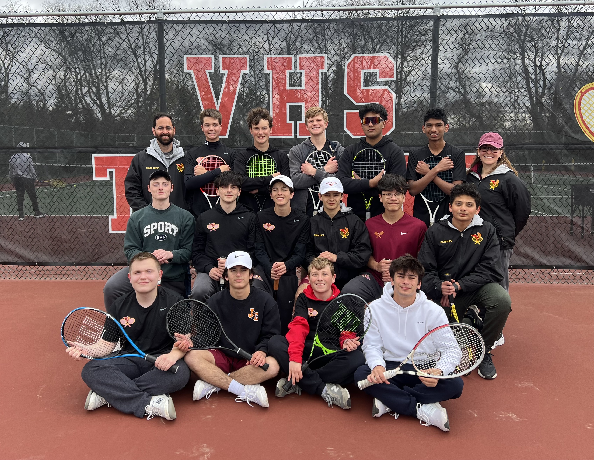

VOORHEES HIGH SCHOOL
Boys Tennis
Boys Tennis

Coach Vasquez-Cortes is in her second year as Head Coach for the Voorhees High School boys tennis team and is honored to have made her coaching debut with such a dedicated and driven group of student-athletes. While new to coaching, she brings over a decade of experience as a high school math teacher and a strong personal connection to the sport.
As a former varsity tennis player in high school, Coach Vasquez-Cortes continues to learn and grow in the game—both through mentorship at a local racquet club and by working closely with her players each season. She is passionate about helping her athletes develop not just as players, but as individuals—physically, mentally, and emotionally.
Since stepping into the coaching role, Coach Vasquez-Cortes, alongside Assistant Coach Ghaly, has helped grow the program and, with the incredible support of team parents, launched the first-ever booster club for Voorhees boys tennis. She looks forward to continuing to build the program and supporting her players on and off the court.

2025 Voorhees Boys Tennis Team
